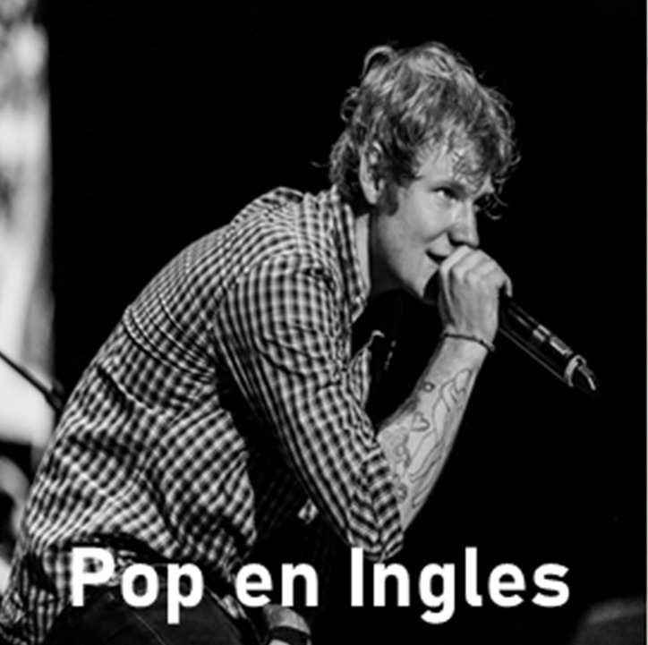
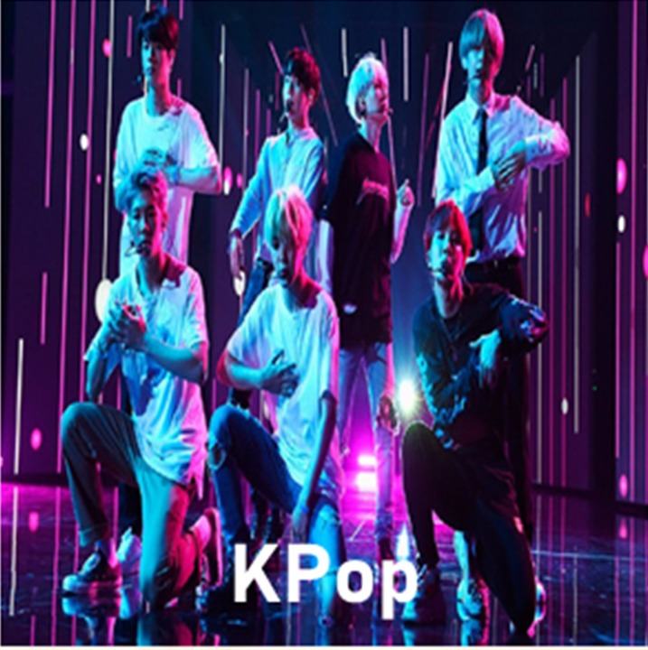

|  |  |
La idea surgio cuando mi mejor amigo y yo discutiamos sobre nuestros generos favoritos de musica y desde ese momento pensamos en crear una pagina en la cual las personas puedan disfrutar de sus artistas preferidos sin excluir otros generos musicales.
"Simplemente todos nos merecemos disfrutar de lo que nos gusta sin que nos juzguen."

La hija pequeña del cantante Pepe Aguilar,Angela Aguilar y el representante de la musica regional mexicana Christian Nodal han encantado a todos con su nueva canción "Dime como quieres", además Los chicos de BTS han sacado su nuevo sencillo llamado "Life goes on" que ha llegado ha ser numéro uno en tendencias...ver más

Encuentranos en Facebook como PlayMusic
ahí encontraras novedades y nuevos TOP 5 de las mejores canciones, visita nuestra página y disfruta de lo nuevo en musica, todo en un solo lugar.